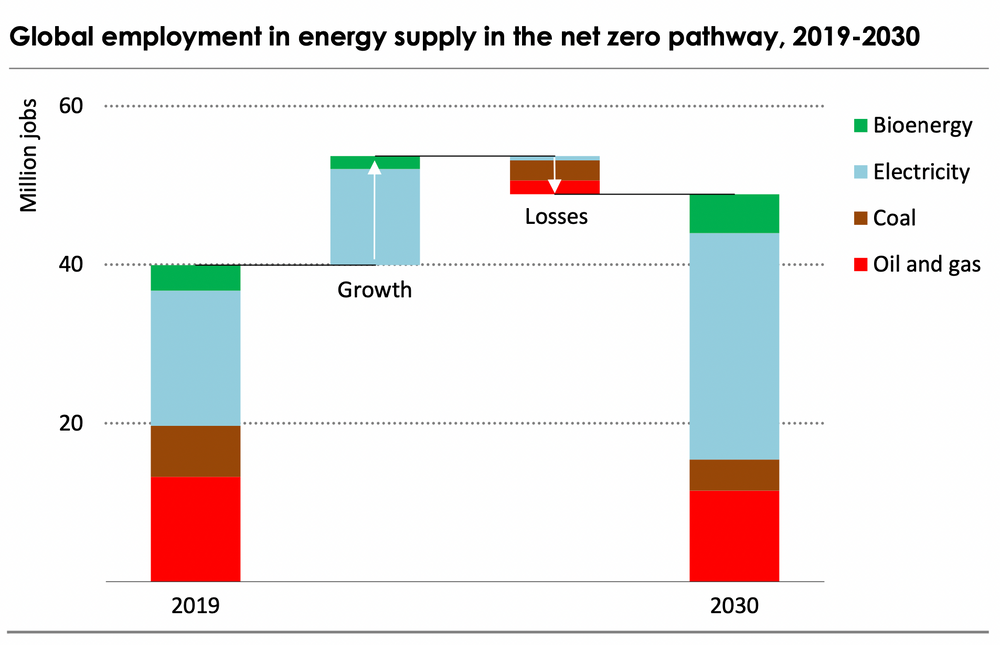

6 Energy Transition
Thompson
Vaclav Smil has repeatedly pointed out that a green energy revolution would be qualitatively different than any energy change in human history because it involves moving from more concentrated to less concentrated energy, rather than in the opposite direction.
However much companies and governments promise dramatic and rapid change, their deeds and small-print rhetoric point to the hard consequences of this reality.
BP may be heralding a low carbon energy future, but its own 2020 annual report presumes the world will still be using between 80 and 100 million barrels of oil a day in 2040. The same report says that ‘significant levels of investment are required for there to be sufficient supplies of oil to meet demand in 2040.’ It takes some cognitive dissonance to believe this oil could still be produced whilst investors shut capital out of the privately-owned oil industry; that is, unless it is accepted that all future oil comes from Russia’s Rosneft and the Middle Eastern state-owned oil companies and is so expensive as to act as an impediment to growth. Still owning 19.75 per cent of Rosneft, BP has clearly hedged how it thinks the energy future will play out.
To think about the energy-origins of western prosperity opens up difficult truths about the place of European empire and the United States’ Middle Eastern wars in the economic history of the twentieth and early twenty-first century. Part of climate idealism contains a desire to leave this unpalatability behind, replacing fossil-fuel imperialism with climate justice. But after the Second World War, western economic life depended on the oil that came out of the Persian Gulf, through the Suez Canal, and into pipelines running to the Mediterranean. The counter-factual that eliminates past wrongs takes a lot else with it, including that which most people in western democracies have little inclination to forsake. Given that battery production presently relies on cobalt mining done in grim conditions in the Democratic Republic of Congo, sometimes with child labour, and much of the solar-grade polysilicon used in solar panels is produced in Xinjiang, green energy will bring less ethical relief than often supposed.
Our cognitive struggles with energy matters extend to our concepts of historical time. Both the dread of a coming apocalypse and a faith in endless human innovation and moral improvement appear hardwired into western culture, first from Christianity, and then its secular offshoot the Enlightenment. When confronted with collective existential questions, western minds reach rather easily to millenarian fears and hopes. Christianity began, after all, with the expectation of an apocalypse and the imminent arrival of God’s kingdom. Although the Roman Catholic Church made Latin Christianity worldly, and Augustine slammed down millenarianism as delusional, the original Christian spirit lingered, readily available as a lens to give moral meaning to past sins in times of social and economic crisis. The apparent ideational clarity of the apocalyptic moment now permeates radical climate activism, captured in Extinction Rebellion’s name, as well as the movement’s performative, and at times itinerant, political style.
Tooze
Net-zero at zero net cost?
The big question is thus not how to mobilise the new money but how to ensure investment happening anyway flows in the right direction. McKinsey trumpets the conclusion that the overall cost to the EU of achieving net-zero by 2050 will be zero: energy savings will cover the costs of the investment. This is great news.
But, as McKinsey knows only too well, that is not how trillions of investment are normally justified. They have to produce an adequate rate of return—opportunity cost is the measure that matters. It is a matter not of physical contraints but of political economy and on that score the news is less good.
According to McKinsey, between now and 2050, almost half the necessary investment will not meet standard investment criteria. Up to 2030, due to the high cost of renewable technologies in their early stages, less than 40 per cent will be justifiable on commercial grounds. In industry and buildings, two sectors where emissions are hard to abate, a tiny fraction of the necessary investment will generate an adequate profit.
It is in closing the gap between the investment that McKinsey has defined as necessary and that which it has defined as justifiable from a business point of view that government comes in.
If the gap were to be closed by public expenditure, Europe’s governments would, according to McKinsey, need to mobilise €4.9 trillion in subsidies over 30 years. That is the amount of profit taxpayers would need to offer investors to get them interested in the energy transition—€365 for every man, woman and child in the EU27, every year for 30 years. Painful and unfair, no doubt, but hardly inconceivable.
In any case, the public purse is only one way of driving business investment. An alternative is to use carbon pricing. McKinsey estimates that with a carbon price of €100 per ton 80 per cent of the necessary investment could be justified on commercial grounds. The funds generated from an emissions-trading system could then be recycled in subsidies and other promotional spending. In hard-to-abate sectors, direct interventions would remain indispensable.
6.1 Minerals in Transition
CarbonTracker on IEA Study
The IEA’s latest piece on minerals[1] critical to the energy transition gives a rather pessimistic spin to what was some very positive data. Looked at from a wider perspective, the note provides another useful source of analytical support for the energy transition.
The IEA looked into the amount of minerals needed to fuel the energy transition, and pretty quickly worked out ‘there is no shortage of resources’. The world has plenty of lithium, nickel, rare earth metals and so on. This is what the United States Geological Survey (USGS) has been saying for a while,[2] and fits with the work done by the Energy Transitions Commission[3] on mineral availability.
The IEA notes for example that we have 170 times as much lithium reserves as annual demand and that our lithium reserves have increased by 42% over the last eight years as higher prices and the prospect of rising demand have drawn out new investment. Under the IEA’s 1.5 degrees scenario, we will need about twice the amount of critical minerals by 2040 (six times as much for the clean energy industry, but that is only part of global demand), and the IEA put forward a series of sensible suggestions (increase recycling, invest in new supply and so on) to ensure that we get it.
However, their take then turns gloomier as we are warned about how hard this is going to be. Impressive charts show that the average electric vehicle uses 210kg of critical minerals compared to only 35kg for an ICE car and that a MW of solar generation capacity needs 6.5 tonnes of critical minerals compared to a coal plant which needs only 3 tonnes. We are then encouraged to think about all the ESG issues and environmental issues associated with the surge in mineral usage and to worry about supplier concentration, water usage, pollution and depletion.
Stand back a moment however, and you can see immediately that the IEA are very selective in their presentation of the data. They look only at the stocks (the assets you need to build the generator or car) not the flows (the energy you need to run them). But the flows of energy are 2-3 orders of magnitude larger than the stocks, and this means that many of their conclusions are more useful for fossil fuel advocates than for policymakers.
One way to demonstrate this is to look at the weight of the material that is required for a fossil fuel system versus a renewable system, as weight is a pretty good proxy for environmental impact. All that coal and oil has to be extracted and converted and shipped around, and at every stage it requires complex and heavy equipment which has an impact on communities and air quality. So we take IEA data to compare below the critical mineral requirement of the renewable system with the energy requirement of the fossil system, to get a more appropriate comparison. There are of course other materials like steel and cement to consider when building transition infrastructure, and other areas like transport networks, but it is safe to say that these will weigh considerably more for the heavy molecules of the fossil system than the light electrons of the renewable system.
For example, take those 6.5 tonnes (half of it from silicon which is not exactly a rare mineral) that you need to build 1MW of solar capacity. It turns out that this is an absolutely immaterial number compared to the weight of the coal that is used to generate electricity. Over its lifetime of 30 years, 1MW of solar capacity will generate over 40,000 MWh of electricity, so the mineral requirement is just 0.15kg per MWh. Compare that to a coal fired generation station where the critical mineral requirement is indeed a bit less, but you need 350 kg of coal to generate that MWh.[4] On this calculation, coal generation will need more than 2,000 times more material by weight than solar generation.
It is a similar story in the transport sector. The average car uses about a tonne of oil a year, or 15 tonnes over its lifetime. Compare that with the 210kg of critical minerals that the EV needs and the weight of the oil is 71 times higher than the weight of the minerals. You burn the oil only once, but the minerals can and will be recycled many times.
IEA Study
Minerals are essential components in many of today’s rapidly growing clean energy technologies – from wind turbines and electricity networks to electric vehicles. Demand for these minerals will grow quickly as clean energy transitions gather pace. This new World Energy Outlook Special Report provides the most comprehensive analysis to date of the complex links between these minerals and the prospects for a secure, rapid transformation of the energy sector.
Alongside a wealth of detail on mineral demand prospects under different technology and policy assumptions, it examines whether today’s mineral investments can meet the needs of a swiftly changing energy sector. It considers the task ahead to promote responsible and sustainable development of mineral resources, and offers vital insights for policy makers, including six key IEA recommendations for a new, comprehensive approach to mineral security.
6.2 IEA Net-zero 2050
Jeff St. John
Net-zero carbon emissions by 2050 — but only if governments redouble their efforts, all fossil fuel investment is halted, and renewable energy capacity and and infrastructure are added at unprecedented scale
Over the next decade, $5 trillion must be invested in converting energy used for electricity generation, transportation, industry and buildings from fossil fuels to carbon-free sources. It will entail a colossal undertaking that will require far greater commitments from government and industry than have been made thus far. But it could drive massive economic growth in rich and poor countries alike, the report finds.
On the electricity front, solar power will need to reach 630 gigawatts and wind power 390 gigawatts by 2030, representing annual additions at four times the scale of the deployment record set in 2020. Annual investment in transmission and distribution grids to manage these renewable resources must triple from $260 billion today to $820 billion by decade’s end.
On the transportation front, sales of new internal combustion cars must end and be replaced by electric vehicles or other carbon-free models by 2035. Public EV charging points must grow from around 1 million today to 40 million in 2030, at a cost of about $90 billion. Manufacturing capacity for batteries for this EV fleet will need to grow from 160 gigawatt-hours to 6,600 GWh by 2030, or the equivalent of nearly 20 gigafactories being added each year.
Energy efficiency improvements must average 4 percent per year through decade’s end, roughly three times the rate achieved over the past two decades. And approximately $40 billion per year must be invested to bring electricity to about 785 million people and clean cooking solutions to about 2.6 billion people

IEA (2021) Net-Zero 2050 Study
Hickel on IEA
The new IEA report on net-zero is a big step in the right direction, and its call to cease all new fossil fuel projects has grabbed headlines, which is welcome. But the report also has some serious problems that are worth discussing:
First, in order to maintain the assumption of economic growth-as-usual in rich countries, it relies on unprecedented rates of GDP/energy decoupling, to an extent that has been questioned repeatedly in the empirical literature.
Second, it achieves this decoupling in large part by relying on efficiency improvements, but the model does not take adequate account of rebound effects, which have been identified as a significant problem.
Third, it relies on a lot of BECCS and other carbon capture and storage approaches, which is a risky gamble and has several big downsides (in terms of land use, biodiversity loss, soil depletion, competition with food crops, energy and water use, etc.)
If we dial down our assumptions about decoupling, bioenergy and CCS to safer and more feasible rates, the net-zero pathway will require a bigger reduction of energy and resource use in rich countries. This needs to be part of our discussion.
For a review of evidence related to the three points above, and for a discussion of more technologically feasible approaches, this recent paper by (???) and Manfred Lenzen is useful.
Hickel (twitter thread) On IEA
Keyzer & Lensen
1.5 °C scenarios reported by the Intergovernmental Panel on Climate Change (IPCC) rely on combinations of controversial negative emissions and unprecedented technological change, while assuming continued growth in gross domestic product (GDP). Thus far, the integrated assessment modelling community and the IPCC have neglected to consider degrowth scenarios, where economic output declines due to stringent climate mitigation. Hence, their potential to avoid reliance on negative emissions and speculative rates of technological change remains unexplored. As a first step to address this gap, this paper compares 1.5 °C degrowth scenarios with IPCC archetype scenarios, using a simplified quantitative representation of the fuel-energy-emissions nexus. Here we find that the degrowth scenarios minimize many key risks for feasibility and sustainability compared to technology-driven pathways, such as the reliance on high energy-GDP decoupling, large-scale carbon dioxide removal and large-scale and high-speed renewable energy transformation. However, substantial challenges remain regarding political feasibility. Nevertheless, degrowth pathways should be thoroughly considered.
The results indicate that degrowth pathways exhibit the lowest relative risks for feasibility and sustainability when compared with established IPCC SR1.5 pathways using our socio-technical risk indicators. In comparison, the higher the technological reli- ance of the assessed mitigation pathways, the higher the risks for socio-technical feasibility and sustainability. The reverse is likely the case for socio-political feasibility, which, however, is softer than socio-technical feasibility. This result contrasts strongly with the absolute primacy of technology-driven IAM scenarios in the IPCC SR1.5.
(??? degrowth scenarios suggest the need for new mitigation pathways)(https://www.nature.com/articles/s41467-021-22884-9) (pdf)
Fickling
One thing worth noting about the radical-sounding (???) announcement that no new petroleum fields need to be developed any more — this is more or less the lived reality of oil majors right now, and has been for years.
Big Oil stopped investing growth capex around 2016.
6.3 Transition Risks
Unrealistic Scenario Pathways
Keyser
1.5 °C scenarios reported by the Intergovernmental Panel on Climate Change (IPCC) rely on combinations of controversial negative emissions and unprecedented technological change, while assuming continued growth in gross domestic product (GDP). Thus far, the integrated assessment modelling community and the IPCC have neglected to consider degrowth sce- narios, where economic output declines due to stringent climate mitigation. Hence, their potential to avoid reliance on negative emissions and speculative rates of technological change remains unexplored. As a first step to address this gap, this paper compares 1.5 °C degrowth scenarios with IPCC archetype scenarios, using a simplified quantitative repre- sentation of the fuel-energy-emissions nexus. Here we find that the degrowth scenarios minimize many key risks for feasibility and sustainability compared to technology-driven pathways, such as the reliance on high energy-GDP decoupling, large-scale carbon dioxide removal and large-scale and high-speed renewable energy transformation. However, sub- stantial challenges remain regarding political feasibility. Nevertheless, degrowth pathways should be thoroughly considered.
Figure: 1.5 °C scenario map under different levels of energy-GDP decoupling, RE speed and NETs. The dimensions are ‘speed of renewable energy transition’ (for the scenarios the 2020–2040 annual average growth in solar, wind and other renewables, in EJ/yr), ‘energy-GDP decoupling’ (for the scenarios the 2020–2040 average difference between GDP growth rate and final energy growth rate, in %) and cumulative CO 2 removal until 2100, including CCS (GtCO 2 ). Historical data points are the rolling averages of the past ten years (e.g., for the 1995 point the period 1986–1995) of the respective indicators. This averaging was chosen (1) because GDP and final energy data are noisy and (2) to emphasise longer-term trends. While historically four years were above a decoupling of 2% since 1986, these are outlieres around a lower, almost constant trend. Historical GDP data (MER, constant 2010 US$) is taken from the World Bank.
Keyser (2021) 1.5 °C degrowth scenarios suggest the need for new mitigation pathways (pdf)
Unrealistic Assumptions
Existing plans to limit global warming rely too much on “increasingly unrealistic assumptions” that societies will be able to remove huge amounts of carbon from the atmosphere while simultaneously maintaining incessant economic growth over the next 50 years, according to a May 2021 study in Nature Communications. These strategies appear to be speeding the planet deeper into the climate crisis.
Economic degrowth—strategies to shrink the economies of rich, developed countries while maintaining the wellbeing of the people and environments they are based on—might be less risky, and a better way to meet the goals of the Paris climate agreement. Efforts to slow climate change that are built on structural social changes, like rethinking the way we work, produce food, heat our homes and move around could be more successful than those that rely on uncertain carbon removal technologies.
The over-reliance on unprecedented carbon dioxide removal and energy efficiency gains means we risk catastrophic climate change if one of the assumptions does not materialize.